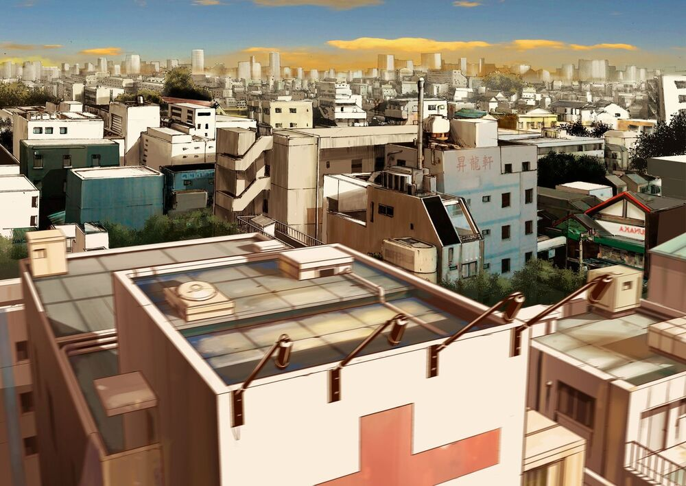
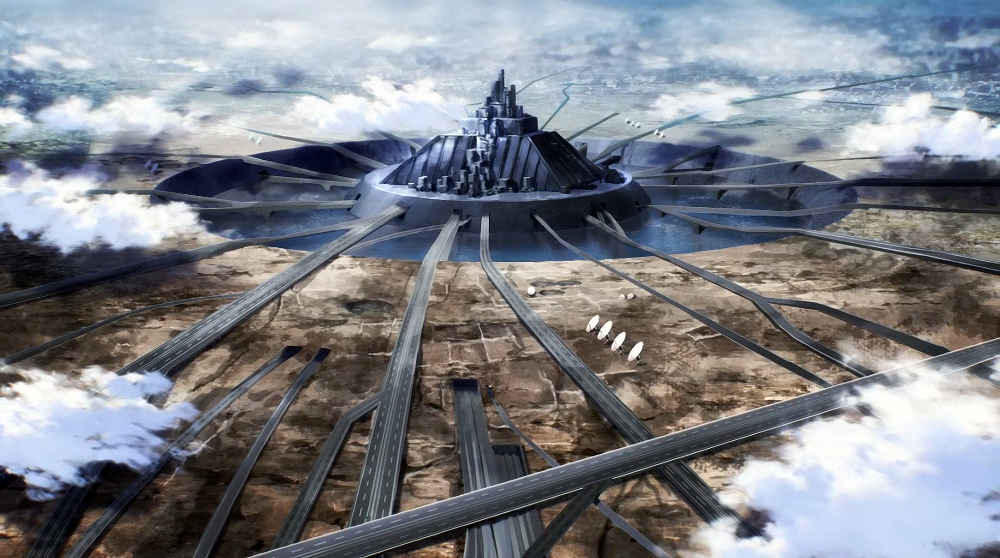
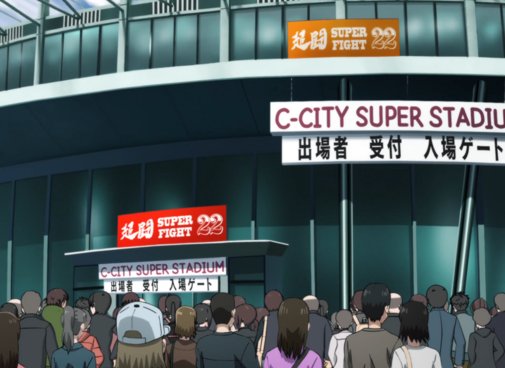
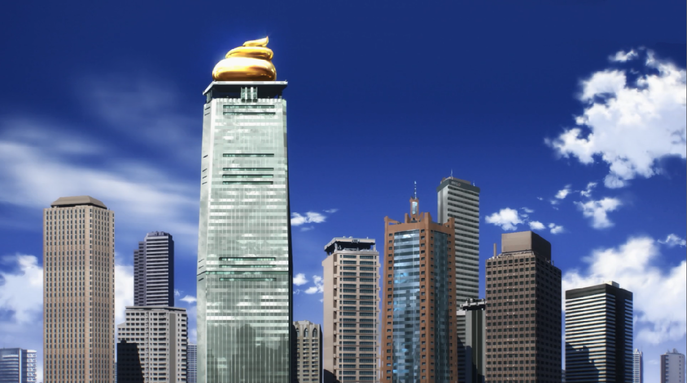
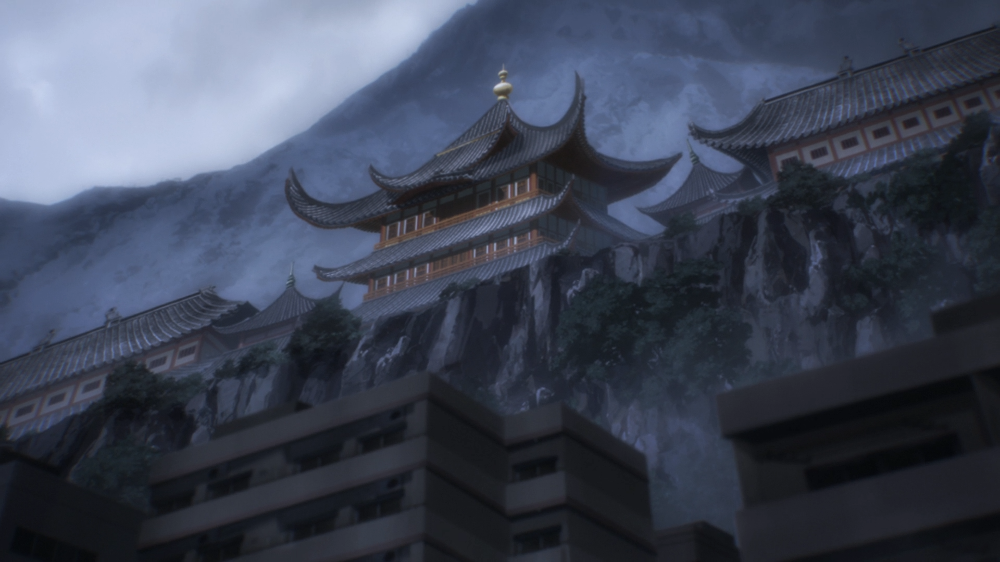
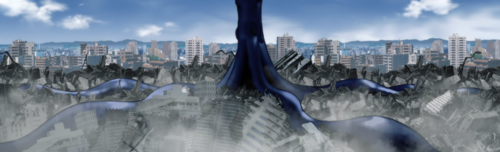
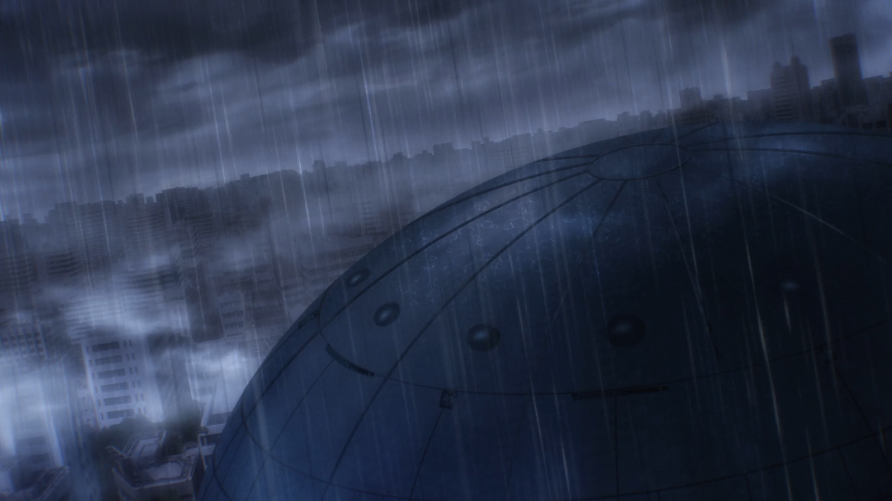
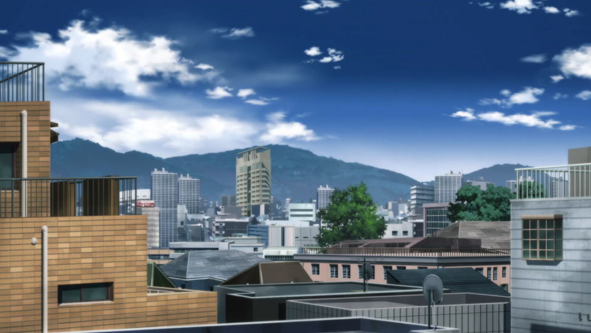
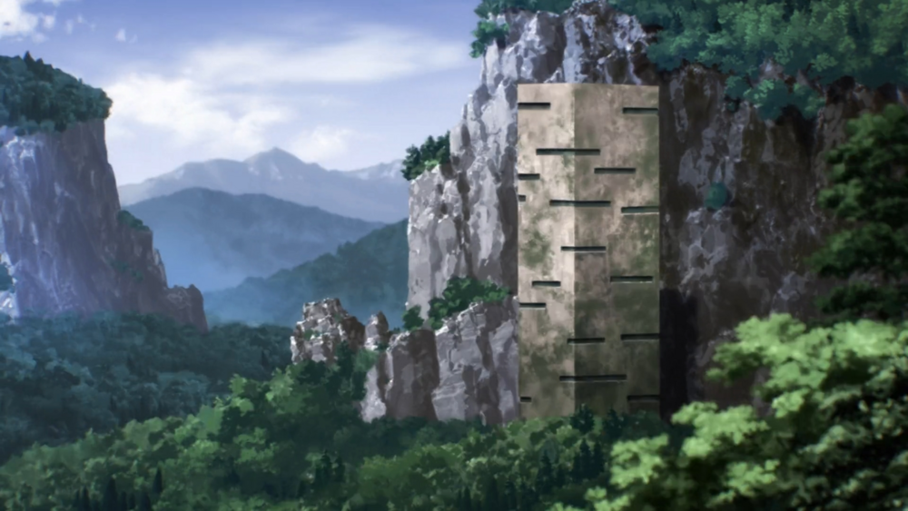

SAITAMA Location
สถานที่ในการ์ตูน เรื่องไซตามะ

1. Z-City (Z市, Zeddo Shi) is a large city on Earth. It consists of a business district, a
residential district, and an abandoned, trashed area commonly referred to as the Ghost Town. Saitama
and Genos are inhabitants of the latter area, which is home to many Mysterious Beings but is free to
live in. It is rumored to contain incredibly powerful Mysterious Beings.
Z-City has had the greatest percentage increase of monster appearances in the past decade.

2.A-City (A市 A Shi) was a very large city on Earth. After being completely destroyed by the Dark Matter Thieves, the area was rebuilt by Metal Knight into an expansive complex with highways leading to the other cities. It now serves as the location of the new Hero Association headquarters and is currently inhabited by Hero Association heroes and staff.

3. C-City (C市, C Shi) is a large city on Earth. It consists of a super stadium. There are at least 16 heroes living in this city.

4. F-City (F市 F Shi) is a large city situated on Earth. Not much is known about the location, other than the hero in charge of supervision of the city is the A-Class, Sneck; and that the Paradisers incident happened in and around the central business district. The leader of the Paradisers, Hammerhead, was last spotted in this city.

5. G-City (G市, G Shi) is a large city situated on Earth.

6. I-City (I市, I Shi) is a large city situated on Earth. There are at least 14 heroes living in this city.

7. J-City (J市 J Shi) is a large seaside city situated on the Earth. There are at least 15 heroes living in this city.

8. M-City (M市, M Shi) is a very large city situated on the Earth. There are 42 heroes living in this city.

9. The House of Evolution (進化の家, Shinka no Ie) was an evil organization founded by Dr. Genus to pursue the goal of human perfection through artificial evolution. Every staff member of the organization was a clone of Dr. Genus. Based on the names and designs of their warriors, the House of Evolution's primary focus seemed to be improving humanity through gene splicing with the DNA of other species. It serves as the first antagonist faced by Saitama alongside his new disciple Genos.